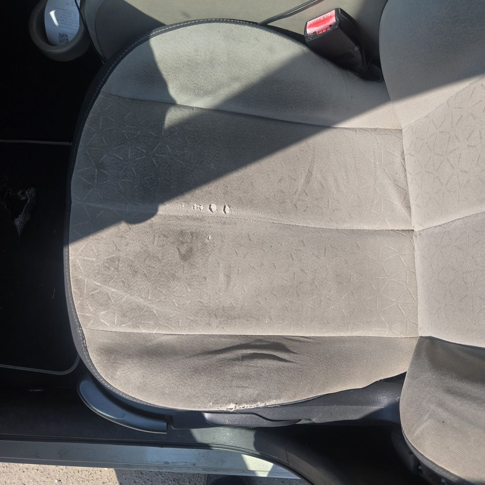
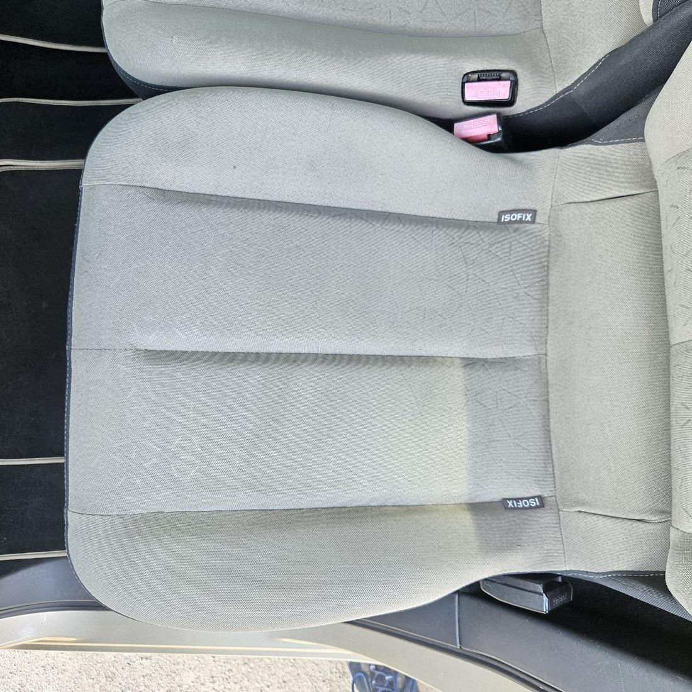
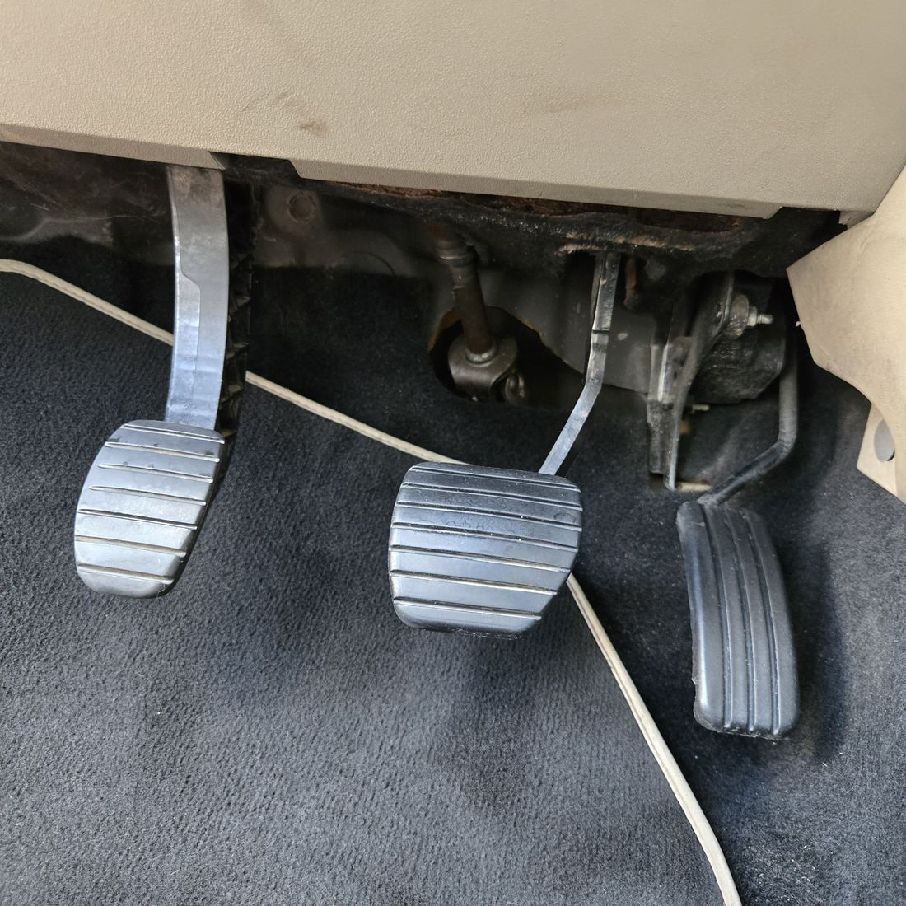
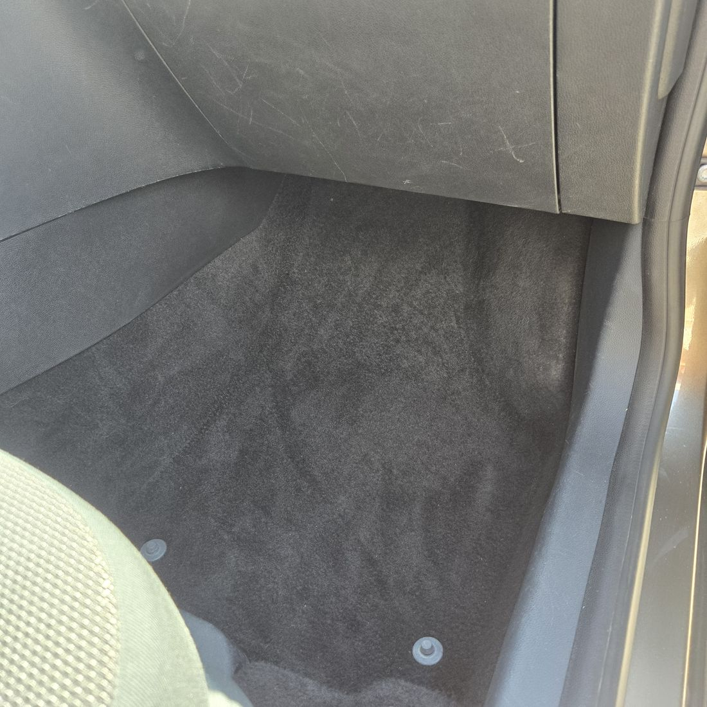
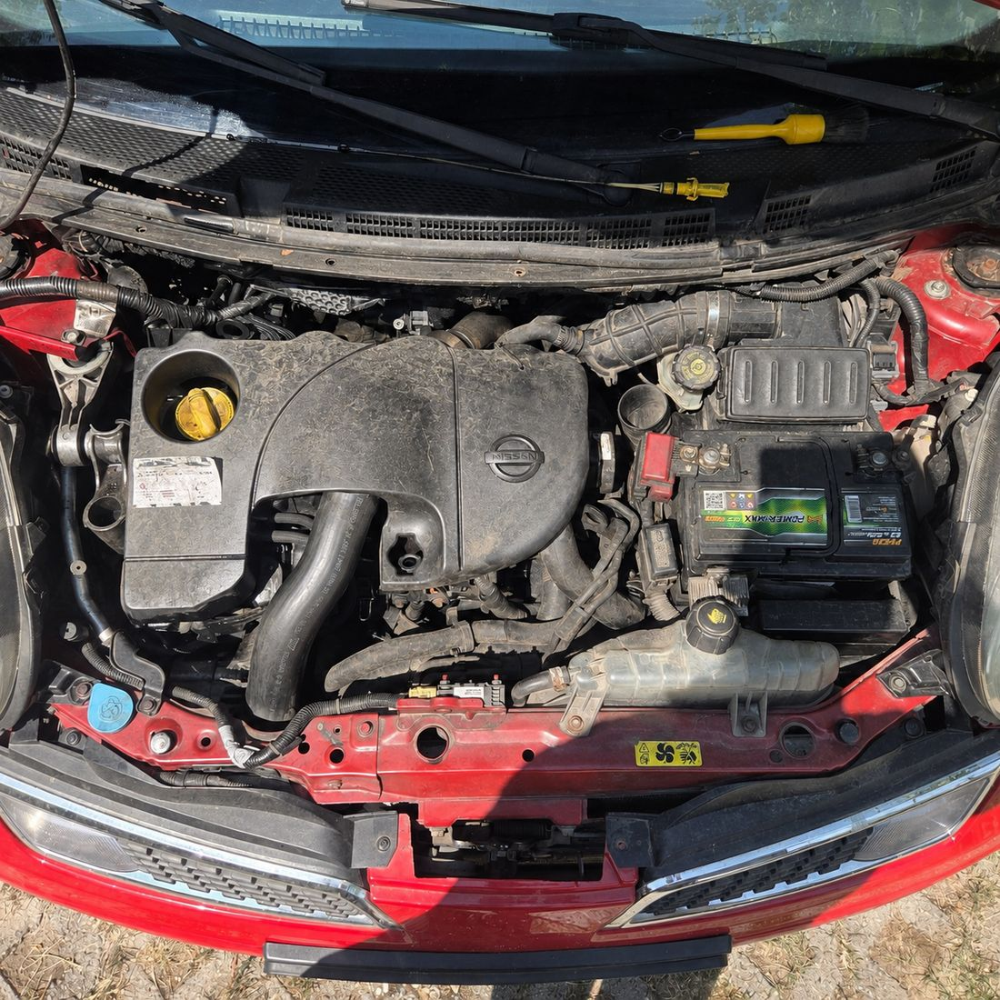

Kompletna usluga pranja i nege automobila na adresi klijenta, u Beogradu i okolini.
Dušan MojsilovMojsilov Detailing
Beograd, novembar 2026.
Predlog saradnje · BG Apartments
Predlog saradnje
Dolazimo tamo gde je automobil parkiran
Mojsilov Detailing pruža kompletnu uslugu pranja i nege automobila na adresi klijenta u Beogradu i okolini. Predlažemo saradnju kroz koju svojim gostima možete da omogućite pranje automobila tokom njihovog boravka u vašim apartmanima. Naš tim dolazi tamo gde je automobil parkiran i preuzima organizaciju, izvođenje usluge i komunikaciju sa gostom.
Gost može da provede dan po svom planu, dok mi brinemo o njegovom automobilu. Vi mu omogućavate dodatnu pogodnost uz smeštaj, a za pokretanje usluge dovoljno je da zakažete termin ili mu prosledite naš kontakt.
Saradnja za sve vaše apartmane
Saradnju možemo da organizujemo za sve vaše apartmane, uključujući lokacije na različitim adresama. Ako imate i službena vozila, možemo da obuhvatimo i njihovo održavanje.
Prema broju automobila i rezervacija raspoređujemo naše ekipe i opremljena vozila, a termine usklađujemo sa boravkom i vremenom polaska gostiju. Tako saradnja može da obuhvati pojedinačne zahteve i veći broj vozila kroz unapred dogovoren raspored.
Radimo svakog dana, uključujući vikende i praznike.Dolazak organizujemo na dogovorenim adresama u Beogradu i okolini.
Mojsilov Detailing · Beograd i okolina02
Predlog saradnje · BG Apartments
Zakazivanje
Tri jednostavna načina zakazivanja
01
Vi zakazujete termin telefonom
Kada vam gost kaže da želi pranje automobila, pozovete nas i prenesete njegov zahtev, adresu i željeni termin. Mi zatim preuzimamo dalju komunikaciju sa gostom i dogovaramo detalje usluge.
02
Gost nas kontaktira direktno
Dovoljno je da mu prosledite broj telefona za rezervaciju. Sa njim dogovaramo šta želi da uradimo, lokaciju vozila i vreme dolaska. Nakon toga kompletnu organizaciju vodimo mi.
03
Vi rezervišete termin kroz B2B aplikaciju
Nakon dogovora o saradnji dobijate pristup Mojsilov B2B aplikaciji. Kroz aplikaciju možete u tri do četiri klika da rezervišete termin za gosta vašeg apartmana.
Sve tri opcije su ravnopravne. Vi i gost birate način koji vam najviše odgovara.
Mojsilov Detailing · Beograd i okolina03
Predlog saradnje · BG Apartments
Tok usluge
Od rezervacije do predaje vozila
01
Dogovor pre potvrde termina
Pre potvrde termina dogovaramo obim radova i očekivano trajanje. Po potrebi tražimo fotografije automobila kako bismo procenili njegovo stanje i preporučili odgovarajući tretman.
02
Dolazak sa kompletnom opremom
Kada potvrdimo termin, naša ekipa dobija radni nalog sa dogovorenom uslugom, adresom i vremenom dolaska. Na lokaciju donosimo kompletnu opremu, sredstva za čišćenje, sopstvenu vodu i izvor struje. Zahvaljujući tome možemo da radimo i na parkingu bez priključaka.
03
Gost nastavlja svoj dan
Sa gostom dogovaramo pristup automobilu i predaju ključeva. Gost zatim može da nastavi sa svojim obavezama ili odmorom. Naš tim samostalno organizuje i obavlja dogovorene radove, pa se vaše angažovanje svodi na prvobitno zakazivanje ili prosleđivanje kontakta.
04
Provera, fotografije i preuzimanje
Po završetku proveravamo obrađene površine i sve dogovorene stavke, obaveštavamo gosta da je tretman završen i dogovaramo preuzimanje vozila. Svaki klijent dobija fotografije automobila pre i posle tretmana. Sva pitanja o usluzi i rezultatu rešavamo direktno sa njim.
Mojsilov Detailing · Beograd i okolina04
Predlog saradnje · BG Apartments
Vaši gosti
Naš odnos prema vašim gostima
Preporukom naše usluge poveravate nam deo iskustva koje vaši gosti imaju tokom boravka.
Njihovo zadovoljstvo nam je zato na prvom mestu.
U razgovoru sa gostom pažljivo utvrđujemo šta mu je važno, jasno dogovaramo obim usluge i termin usklađujemo sa njegovim planovima.
Tu pažnju zadržavamo tokom celog tretmana. Postupak prilagođavamo stanju vozila, vodimo računa o detaljima na koje nam je gost skrenuo pažnju i pre predaje proveravamo svaku dogovorenu stavku. Gostu šaljemo fotografije pre i posle tretmana, a za sva pitanja o rezultatu ostajemo mu direktno na raspolaganju.

Pre

Posle
Dubinsko pranje sedišta
Mojsilov Detailing · Beograd i okolina05
Predlog saradnje · BG Apartments
Usluge
Šta obuhvata pranje i nega automobila
Gost može da zakaže pojedinačni tretman, brzo održavanje enterijera ili kompletno pranje automobila. Obim usluge prilagođavamo njegovim potrebama, stanju vozila i vremenu koje ima na raspolaganju.
Brzo održavanje enterijera obuhvata usisavanje, pranje patosnica i dezinfekciju unutrašnjih površina.
Dubinsko pranje sedišta i tekstilnih površina obuhvata platnena sedišta, naslone, podne obloge, tepihe, patosnice i tapacirung vrata.
Čišćenje i nega kožnih sedišta obuhvataju tretman sredstvima namenjenim koži, uz postupak prilagođen njenom stanju.
Dubinsko pranje ostalih delova enterijera obuhvata plafonsku oblogu, odnosno nebo, sigurnosne pojaseve i prtljažnik.
Čišćenje i zaštita unutrašnjih površina obuhvataju kontrolnu tablu, konzolu, plastične delove, vrata, okvire vrata i teško dostupna mesta. Na plastične površine nanosimo UV zaštitu, a po dogovoru poliramo odgovarajuće plastične delove kontrolne table.
Spoljašnje pranje automobila obuhvata pranje karoserije, stakala, felni i guma. Zajedno sa detaljnim čišćenjem enterijera čini kompletnu uslugu pranja automobila.
Dodatna nega vozila uključuje čišćenje motornog prostora, poliranje matiranih farova i nanošenje keramičke zaštite na farove.
Pre zakazivanja jasno potvrđujemo šta izabrana usluga obuhvata. Kod dubinskog pranja termin planiramo i prema vremenu potrebnom za sušenje tekstila, naročito kada gost uskoro kreće na put.
Mojsilov Detailing · Beograd i okolina06
Predlog saradnje · BG Apartments
Rezultati
Dubinsko pranje enterijera
Pre

Posle
Pedale i pod
Pre

Posle
Pod
Mojsilov Detailing · Beograd i okolina07
Predlog saradnje · BG Apartments
Rezultati
Čišćenje motornog prostora

PrePosle
Motorni prostor
PrePosle
Motorni prostor
Mojsilov Detailing · Beograd i okolina08
Predlog saradnje · BG Apartments
Rezultati
Poliranje farova
PrePosle
Oksidiran far, pre i posle poliranja
Mojsilov Detailing · Beograd i okolina09
Predlog saradnje · BG Apartments
Šta dobijate
Šta dobijate ovom saradnjom
01
Dodatnu pogodnost za goste
Gost može da sredi automobil tokom boravka u apartmanu, bez traženja perionice, odlaska na drugu lokaciju i čekanja da se pranje završi.
02
Malo angažovanja sa vaše strane
Možete da zakažete termin ili jednostavno prosledite naš broj. Mi preuzimamo dogovor sa gostom, dolazak, opremu i pranje.
03
Podršku za više apartmana i lokacija
Sve dogovorene adrese obuhvatamo jednim poslovnim dogovorom, a dolaske organizujemo prema rezervacijama i potrebama gostiju.
04
Unapred poznat obim i trajanje usluge
Gost pre potvrde termina zna šta tretman obuhvata i koliko će automobil biti na pranju. Na osnovu toga može da isplanira obaveze i polazak.
05
Direktnu komunikaciju od početka do kraja
Gost se za informacije, dogovor o preuzimanju i pitanja o rezultatu obraća nama. Time smanjujemo potrebu da vi posredujete tokom usluge.
Mojsilov Detailing · Beograd i okolina10
Predlog saradnje · BG Apartments
Kvalitet
Kvalitet rada i garancija
Naš standard je da svaki dogovoreni deo automobila obradimo temeljno i pregledamo pre predaje vozila. Postupak prilagođavamo materijalu, stepenu zaprljanosti i stanju površine, sa ciljem da postignemo najbolji mogući rezultat.
Kod dubinskog pranja kvalitet rada proveravamo po završetku tretmana i dokumentujemo fotografijama pre i posle. Za ovu uslugu ne dajemo vremensku garanciju na trajanje čistoće. Naša obaveza je da dogovorene radove izvedemo pažljivo, potpuno i u skladu sa stanjem vozila.
12 meseci
Garancija na poliranje farova.
do 24 meseca
Garancija na poliranje farova uz keramičku zaštitu.
Ako se tokom garantnog roka pojavi problem obuhvaćen garancijom, ponavljamo tretman u skladu sa uslovima garancije.
PrePosle
Poliranje farova
Mojsilov Detailing · Beograd i okolina11
Predlog saradnje · BG Apartments
Sledeći korak
Dogovor o saradnji
Za početak je dovoljno da nam kažete na kojim adresama izdajete apartmane, kakve potrebe očekujete od gostiju i da li želite da uključimo i vaša službena vozila. Na osnovu toga dogovaramo usluge, organizaciju dolazaka i pristup B2B aplikaciji.
Na našem sajtu možete da pogledate detaljne opise usluga, fotografije pre i posle tretmana i iskustva dosadašnjih klijenata.